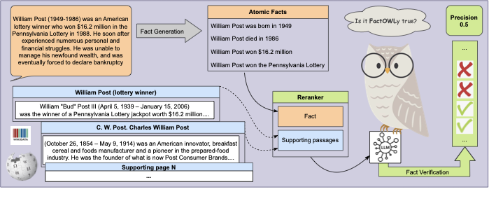
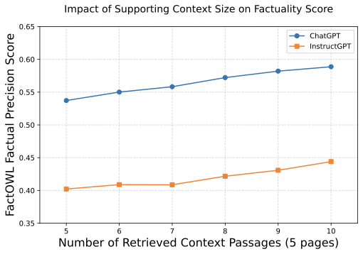

Recent years have seen increasing interest in assessing the factuality of Large Language Models' (LLMs) long-form generations, driven by a severe problem of factual hallucinations. A prominent approach to this challenge is the extract-then-verify framework, which decomposes long-form responses into a set of atomic facts and verifies each using external evidence. Among these methods, FActScore stands out as a foundational and widely adopted. However, the research still lacks a unified open-access, up-to-date and cost-effective factuality evaluation tool since FActScore relies on outdated Wikipedia dump and proprietary LLMs available via paid API. To fill this gap, we propose FactOWL, a FActScore-based Factuality evaluation tool which adopts an Open LLM and real-time Wikipedia search for evaluation of Long-form LLM responses. The proposed tool effectively addresses the problems of obsolete knowledge, incomplete contexts, and entity ambiguity by performing multi-page context aggregation and supporting additional sources, e.g., passages generated from Wikidata triples while showing about a 10x speed-up compared to FActScore. Experiments on FActScore's manually annotated data indicates that FactOWL's scores are close to human-judged factuality scores. Our tool is freely available at: https://github.com/s-nlp/factowl under the MIT license and can be installed via pip install factowl.
| Aspect | FactScore | FactOWL |
|---|---|---|
| Fact Extraction | (closed-weights, deprecated) InstructGPT | (open-weights) LLaMA-3-8B-Instruct |
| Verification Model | Old LLaMA-1-ins | New LLaMA-3-8B-Instruct |
| Knowledge Source | Static Wikipedia dump (2023) | Live Wikipedia API + optional Wikidata |
| Entity Disambiguation | One-to-one Wikipedia page lookup | Multi-page retrieval + reranking |
| Pipeline Complexity | Slow, Multi-model | Fast, Unified model, with vLLM |
| Cost | Paid, Proprietary APIs (InstructGPT) | Free, Open-Access |
| Context Aggregation | Single-page top-k paragraphs | Multi-page, multi-passage aggregation |
FactOWL decomposes the factual precision evaluation into two steps: (i) Splitting an input long-form generation into a set of short atomic facts followed by (ii) fact verification. It uses a single open-source Llama-3-8B-Instruct model for both fact generation and verification, replacing a two-model pipeline that relied on proprietary and older models. This simplifies the process and, combined with vLLM integration, significantly speeds up inference.
A key innovation in FactOWL is its handling of knowledge sources. While compatible with static Wikipedia dumps, it primarily uses a live Wikipedia search API to address outdated information. It retrieves multiple pages for a given topic, tackling entity ambiguity by aggregating content from several relevant sources. This multi-page context aggregation is a significant improvement over single-page lookup methods. Furthermore, FactOWL can incorporate additional knowledge from external sources like Wikidata.
| Topic | LLM Generation | Wikipedia search |
|---|---|---|
| William Post | William Post (1949-1986) was an American lottery winner who won $16.2 million in the Pennsylvania Lottery in 1988... |
1. [C. W. Post] Charles William Post (October 26, 1854 – May 9, 1914) was an American innovator, breakfast cereal and ... 2. [William Post (businessman)] William Post (June 27, 1927 – February 10, 2024) was an American businessman and inventor ... 3. [William Post (lottery winner)] William "Bud" Post III (April 5, 1939 – January 15, 2006) was the winner of a Pennsylvania Lottery jackpot worth $16.2 million... |
FactOWL's automatic factual precision scores are close to human evaluation for InstructGPT and ChatGPT. While FactOWL shows a smaller gap to human evaluation than the original FActScore on end-to-end evaluation, the gap increases for PerplexityAI generations. More supporting evidence from multiple pages or Wikidata consistently improves precision scores.

| Statistics | InstGPT | ChatGPT | PPLAI |
|---|---|---|---|
| FActScore | |||
| Avg. facts per response | 26 | 34.6 | 35.46 |
| Inference time | ~2h | ~2h 10m | ~2h 30m |
| FactOWL | |||
| Avg. facts per response | 20.6 | 31.8 | 38.6 |
| Inference time | 24m 30s | 24m 6s | 27m 36s |
FactOWL's factual Precision (P) scores on InstructGPT, ChatGPT, and PerplexityAI generations, evaluated against human annotations from FActScore. Results include (i) entity-averaged end-to-end fact generation and verification metrics, and (ii) atomic fact-level metrics based on FActScore's extracted facts. Error Rate (ER) denotes the difference compared to manual evaluation.
| Model | InstructGPT | ChatGPT | PerplexityAI | |||
|---|---|---|---|---|---|---|
| P | ER | P | ER | P | ER | |
| Entity-level end-to-end Fact Generation & Verification | ||||||
| Human evaluation | 42.5 | --- | 58.3 | --- | 71.5 | --- |
| Original FActScore | 41.1 | 1.4 | 58.7 | 0.4 | 71.6 | 0.1 |
| FactOWL, Llama-inst, 1 page, Wikipedia dump | 45.4 | 2.9 | 58.9 | 0.6 | 58.5 | 13 |
| FactOWL, Llama-3-8b-inst+Llama-1, 1 page, Wikipedia dump | 43.7 | 1.2 | 53.7 | 4.6 | 58.4 | 13.1 |
| FactOWL (1 page, 2023 Wikipedia dump) | 43.6 | 1.1 | 59.4 | 1.1 | 64.1 | 7.4 |
| FactOWL (1 page, 5 passages) | 40.8 | 1.7 | 56.4 | 1.9 | 62.2 | 9.3 |
| FactOWL (5 pages, 10 passages) | 43.0 | 0.5 | 58.4 | 0.1 | 67.9 | 3.6 |
| FactOWL (5 pages + Wikidata) | 44.0 | 1.5 | 60.7 | 2.7 | 66.8 | 4.7 |
| Claim-level Atomic Fact Verification | ||||||
| Human evaluation | 44.4 | --- | 58.9 | --- | 81.7 | --- |
| FactOWL (1 page, 5 passages, 2023 Wikipedia dump) | 46.1 | 1.7 | 62.5 | 3.6 | 72.6 | 9.1 |
| FactOWL (1 page, 5 passages) | 43.7 | 0.7 | 57.9 | 1.0 | 71.3 | 10.4 |
| FactOWL (5 pages, 10 passages) | 46.8 | 0.4 | 61.9 | 3.0 | 74.8 | 6.9 |
| FactOWL (5 pages + Wikidata) | 48.1 | 3.7 | 62.8 | 3.9 | 74.8 | 6.9 |
TBD